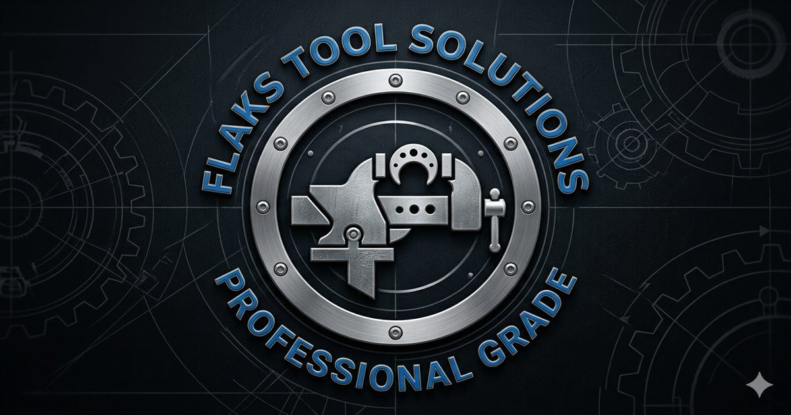

КалібриКалибры
Калібр-втулка рабочий с лапкой та пробка контрольная для КМ3 КалібрКалибр-втулка рабочий с лапкой и пробка контрольная для КМ3 Калибр
ОписОписание
Калібр-втулка рабочий с лапкой та пробка контрольная для КМ3 Калібр — професійний металорізальний інструмент для контролю розмірів і різьби деталей. Основні параметри: КМ3. В наявності 5 шт. на складі у Харкові. Ціна 4500 грн без ПДВ. Опт і роздріб, відправлення по всій Україні. Замовлення від 2 000 грн.Калибр-втулка рабочий с лапкой и пробка контрольная для КМ3 Калибр — профессиональный металлорежущий инструмент для контроля размеров и резьбы деталей. Основные параметры: КМ3. В наличии 5 шт. на складе в Харькове. Цена 4500 грн без НДС. Опт и розница, отправка по всей Украине. Заказ от 2 000 грн. Уточняйте наличие, аналоги и технические характеристики по телефону или e-mail — поможем подобрать инструмент под вашу операцию.
ХарактеристикиХарактеристики
| Тип інструментуТип инструмента | КалібрКалибр |
|---|---|
| КатегоріяКатегория | КалібриКалибры |
| Конус МорзеКонус Морзе | КМ3КМ3 |
| СтанСостояние | новийновый |
| Код товаруКод товара | FLK-03731FLK-03731 |
| НаявністьНаличие | 5 шт.5 шт. |